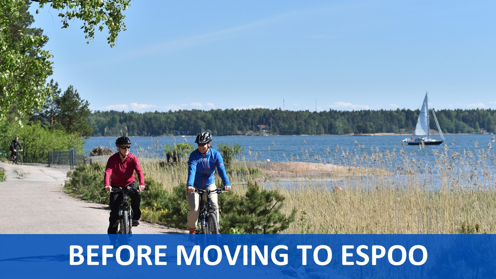

Espoo is a home for people and enterprises from all over the world. Currently about 18% of the population speak a foreign mother tongue and more than 600 international companies are located in Espoo.  The City of Espoo is an active participant in international networks. These organisations offer platforms for sharing knowledge and exchanging ideas in order to improve the city’s services and the competence of its staff. Furthermore these networks make important policy work on specific issues and reinforce the important role that local government plays.